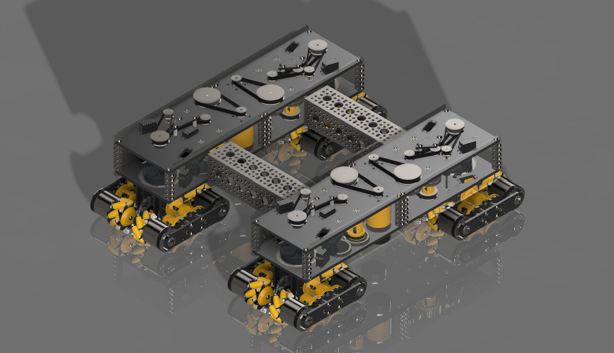

04 //
Chassis Concepts
9 DRIVETRAINS · OPEN-SOURCE
Drivetrain
R&D
From switchable butterfly drives to a ball drive and an experimental swerve-mecanum hybrid — every chassis we prototype is open-sourced on Onshape. Explore each concept below.
// FLAGSHIP CONCEPT

MDL-09 · ★ FLAGSHIP
Differential Swerve-Mecanum
A hybrid between both families of holonomic drivetrains — combining differential swerve and mecanum into one system that uses only 4 motors and 12 servos to actuate nearly 400 degrees of freedom, including 16 individually controlled wheels.
// CONCEPT LIBRARY
Butterfly v1
SWITCHABLESwitches from a mecanum-based holonomic drivetrain to a 4-wheel tank drive for defense — engaging the tank wheels via a giant partial gear.
Butterfly v2
LINKAGEIn contrast to v1, this version engages the tank wheels via an over-centered linkage — giving more traction on the field.
8-Wheel Mecanum
DEFENSIVEEight specially-made mecanum wheels exploit mecanum kinematics to strafe and move holonomically — while keeping a significant defensive edge over normal mecanum.
Collinear
EXPERIMENTALAn experimental mecanum drivetrain designed to channel more motor power into sideways strafing, improving overall mobility.
Coaxial Swerve v1
COMPACT22045's first attempt at coaxial swerve. v1 uses a traditional FTC parallel-plate structure to house the pods, keeping the whole drivetrain compact.
Coax v2
OFFSEASONv2 mounts the plates vertically rather than horizontally, using bellypans and floor plates instead of parallel plates — optimized during the offseason.
Differential Swerve
2-WHEELUses a differential gearbox to drive on two wheels, whose speed and heading are set by the sum and difference of the RPMs of the two motors powering each wheel.
Ball Drive
HIGH-TRACTIONBuilt on the same principles as differential drive, but actuates omniwheels to spin a ball in any direction — greatly increasing field traction while keeping differential-swerve's benefits.
// Open-source CAD renders — every drivetrain is public on our Onshape.